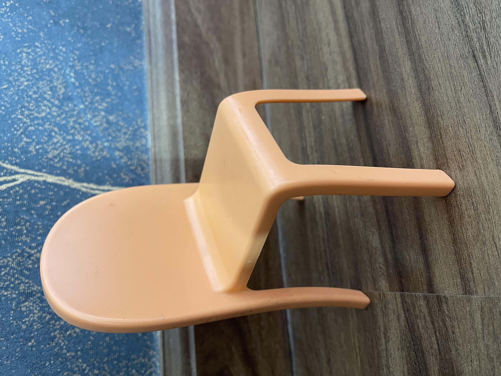
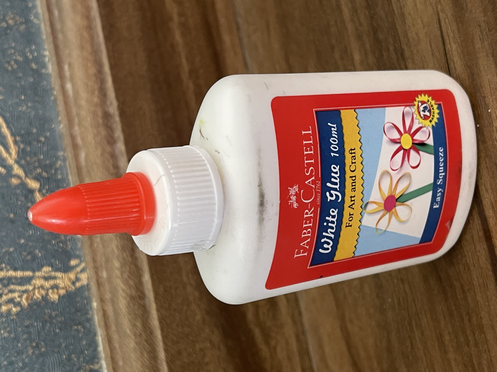
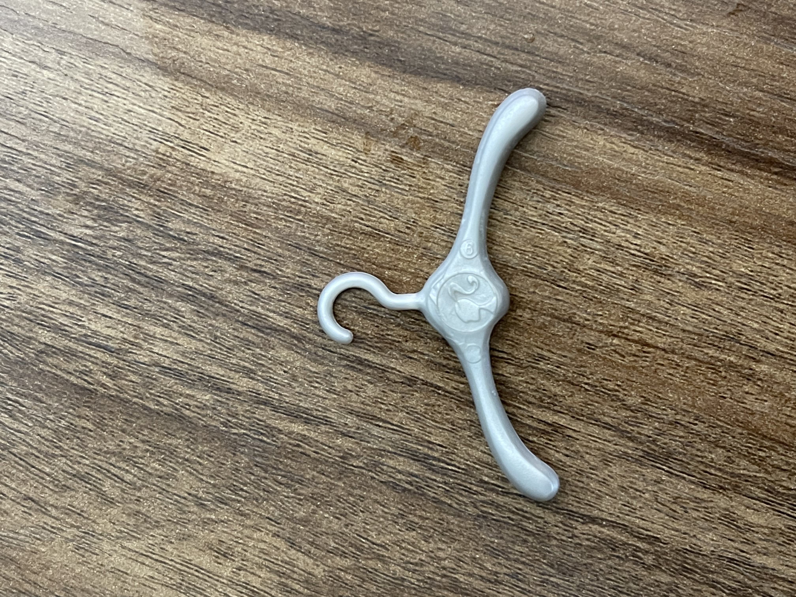
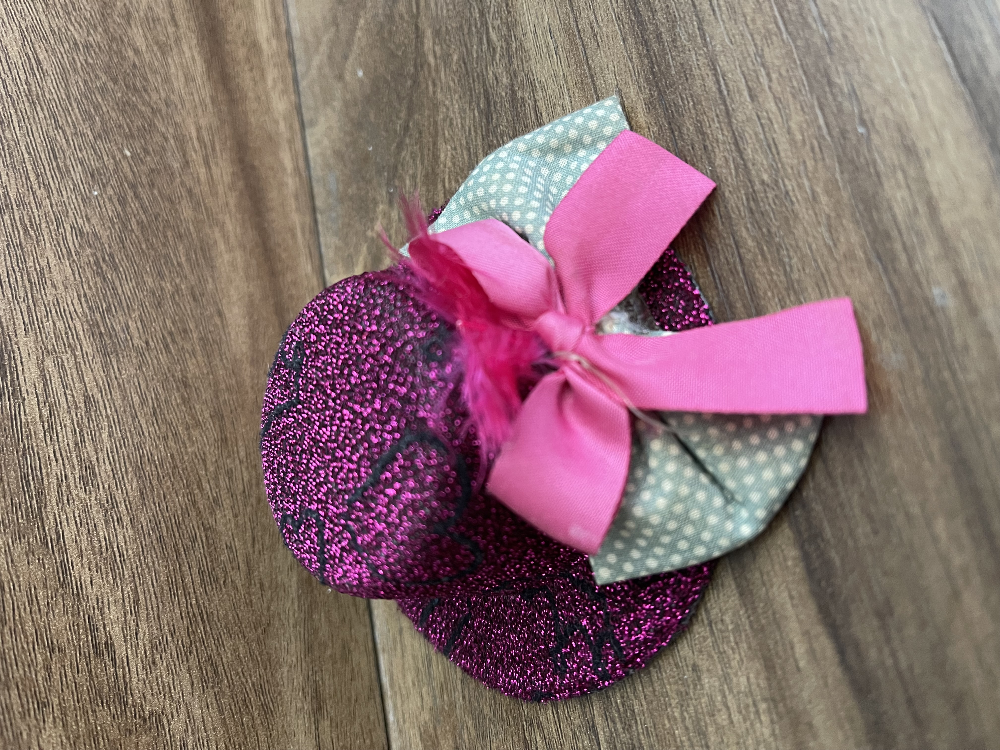
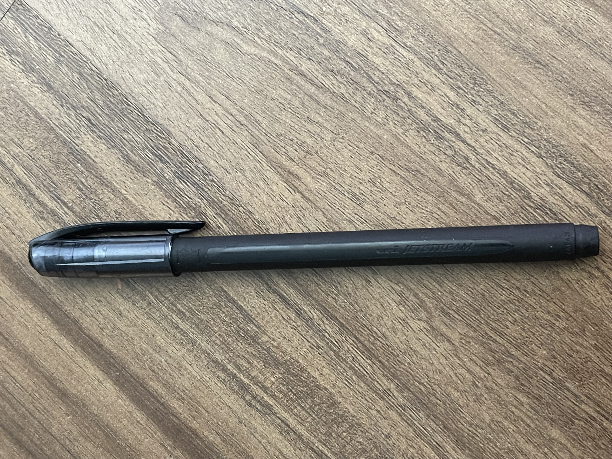
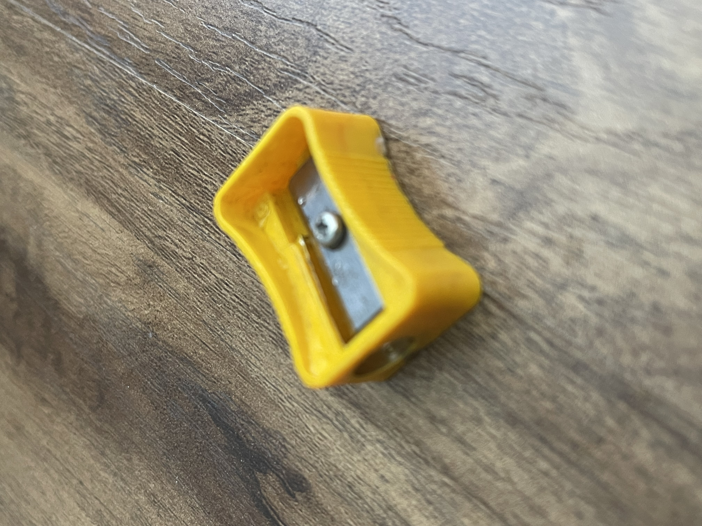
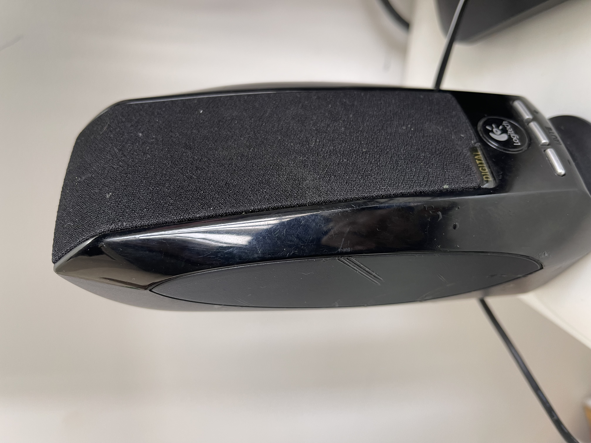

CASE STUDY BETWEEN GOOGLE LENS AND MOBILENET
Google Lens
VS
MobileNet
1. Test Image -

Output on Google Lens - Plastic Outdoor chair
Output on MobileNet Model - pencil box, pencil case
Result -
Google lens is more Accurate
2. Test Image -

Output on Google Lens - Plastic comb- pink
Output on MobileNet Model - window shade
Result -
Google lens is more Accurate
3. Test Image -

Output on Google Lens - Barbell, Dumbbell
Output on MobileNet Model - dumbbell
Result -
Both are correct
4. Test Image -

Output on Google Lens - Faber-Castell White glue
Output on MobileNet Model - lipstick, lip rouge
Result -
Google lens is more Accurate
5. Test Image -

Output on Google Lens - Cloth hanger
Output on MobileNet Model - knot
Result -
Google lens is more Accurate
6. Test Image -

Output on Google Lens - Sparkling pink top hat
Output on MobileNet Model - bow, bow-tie
Result -
Google lens is more Accurate
7. Test Image -

Output on Google Lens - No results found
Output on MobileNet Model - shower curtain
Result -
None are correct
8. Test Image -

Output on Google Lens - Scale/ruler
Output on MobileNet Model - wool, woolen, woollen
Result -
Google lens is more Accurate
9. Test Image -

Output on Google Lens - sharpener
Output on MobileNet Model - screen
Result -
Google lens is more Accurate
10. Test Image -

Output on Google Lens - speaker
Output on MobileNet Model - loudspeaker, speaker
Result -
Both are correct
I have tested 5 images
GOOGLE LENS has predicted 9 of them correctly, MobileNet model has predicted 2 of them correctly.
2 images both of them got correctly and 1 image none of them got correctly.
Hence, GOOGLE LENS is more accurate.